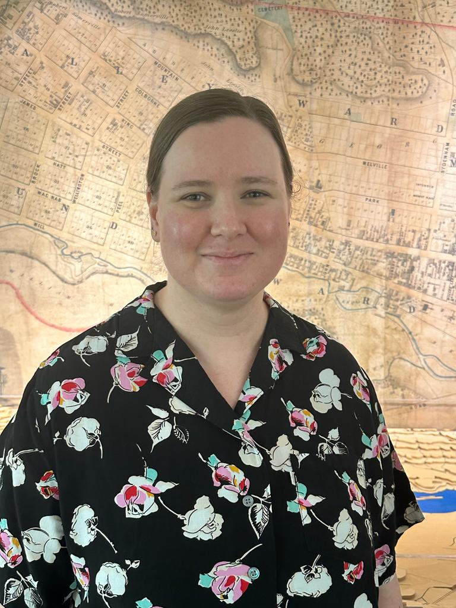
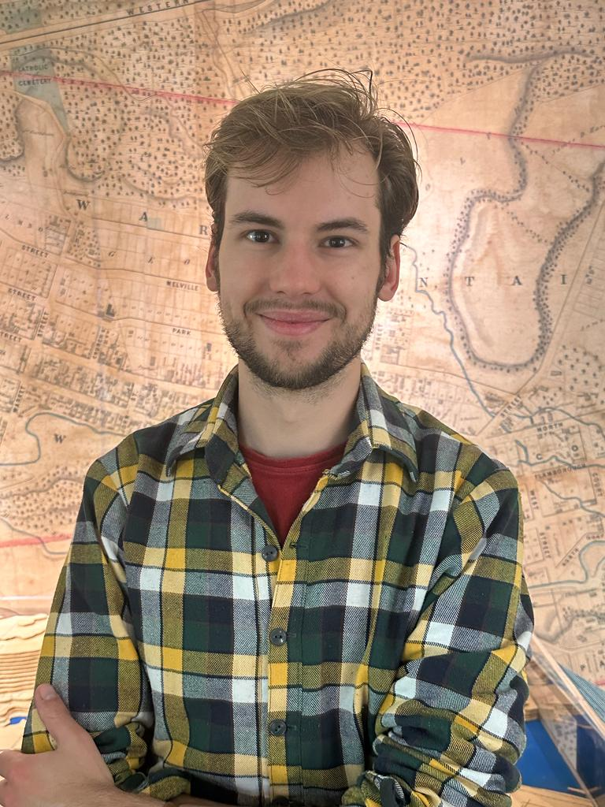
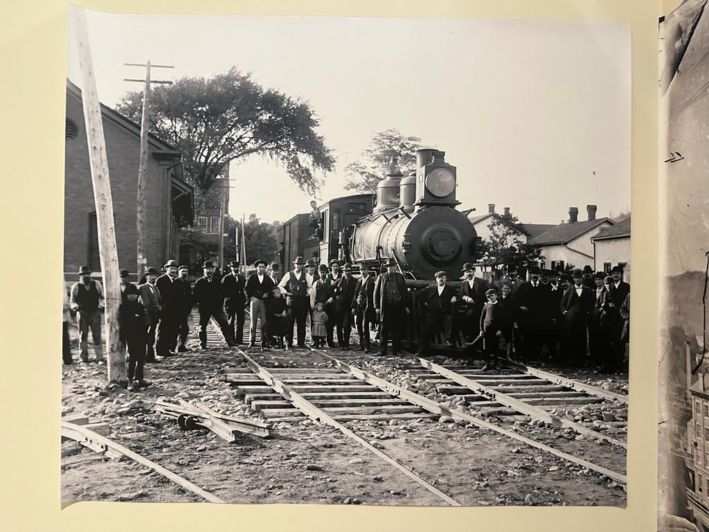
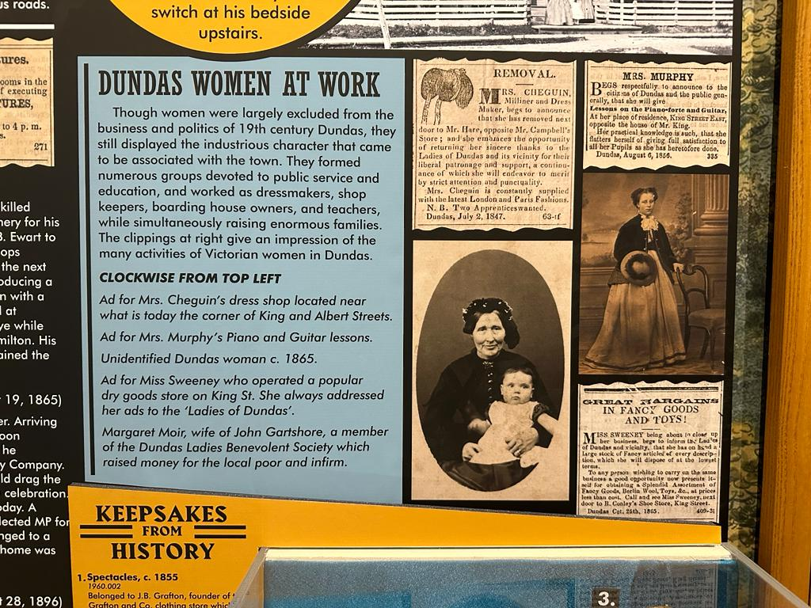
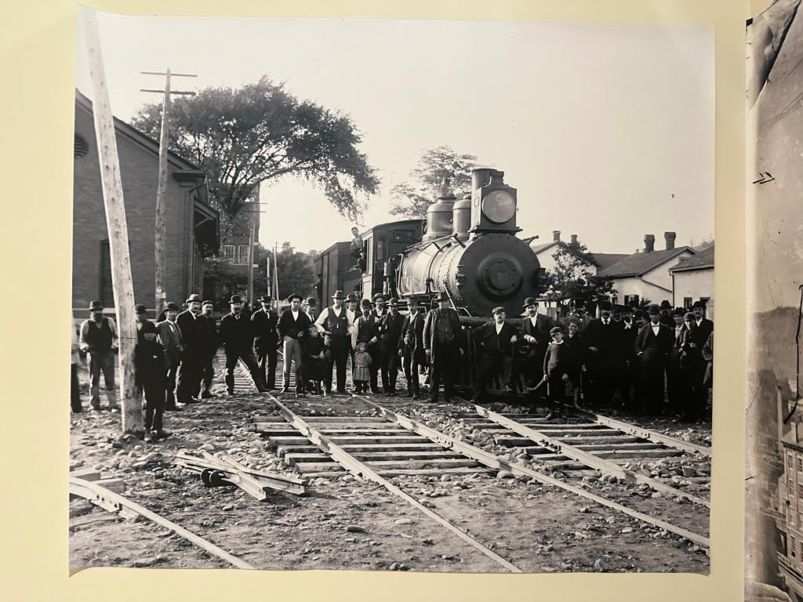
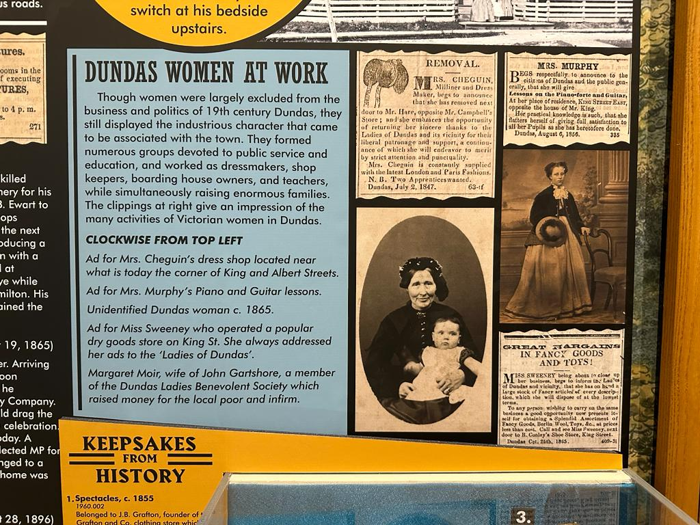
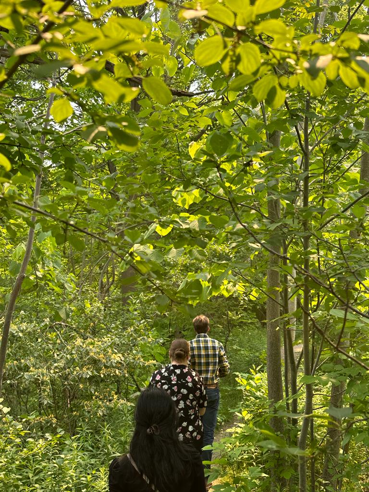
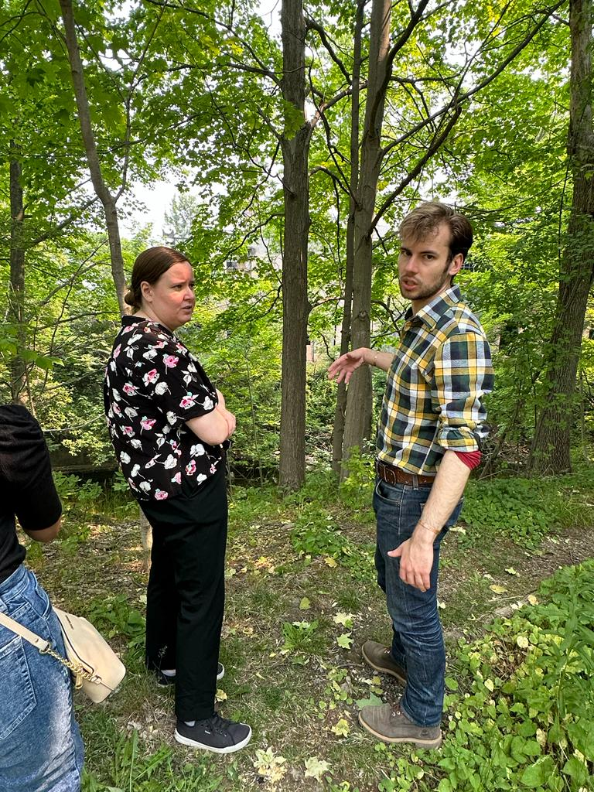
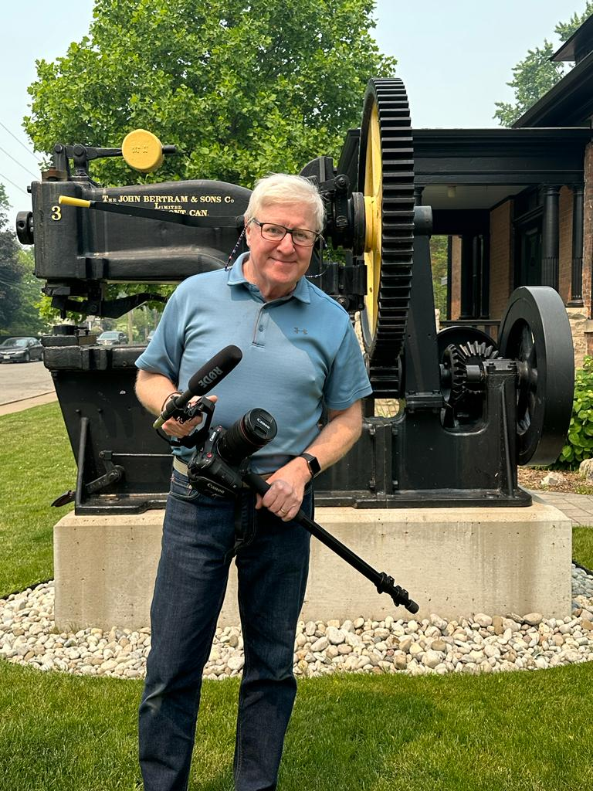

Visit to the Museum

Dundas
Dundas is a community tucked beneath the Niagara Escarpment in Southern Ontario, Canada. It became incorporated as a town on July 28, 1847, and remained a distinct municipality until its amalgamation with the City of Hamilton on January 1, 2001. The Community of Dundas today, with its picturesque downtown, heritage homes, and tree-lined streets, has become the arts and cultural heart of the area
Dundas Museum
The Dundas Museum & Archives has been a unifying force since its inception, bringing people together to appreciate and understand our rich heritage. With a focus on the Dundas Valley's history and geography, our collections, exhibits, and events offer a glimpse into the unfolding of our unique region. Their mission is to provide a welcoming environment for visitors of all ages, where they can gather, learn, and explore captivating stories. Their team of dedicated professionals and volunteers, committed to heritage education and preservation, upholds the highest standards in maintaining our collections. As a nonprofit organization funded privately, they deeply appreciate the additional support they receive from the community. These institutions play a vital role in documenting and showcasing the unique history and culture of a community.
Kelsey & Austin
 Kelsey, with her impressive academic background and four years of experience at the Dundas museum, has been an invaluable resource for our project. Holding degrees in Library and Information Science and Film Studies, her expertise spans various fields. She has made significant contributions to the museum, particularly in curating and arranging articles on their website. Her insights and knowledge have greatly enhanced our understanding of Dundas' history.
 With Austin as our knowledgeable guide, we delved into the history of Dundas. His expertise and passion for the subject allowed us to gain a comprehensive understanding of the city's past. Through engaging conversations and storytelling, Austin brought the historical narrative to life, helping us appreciate the significant events and figures that shaped Dundas. His guidance was instrumental in our journey of discovery and deepened our appreciation for the city's rich heritage.

Takeaways from the museum
Love for city
The people of Dundas have a strong love for their city and hold a special affection for the Victorian houses that line its streets. These architectural gems are meticulously preserved and cherished by the residents, representing a connection to the city's history and heritage. The Victorian houses evoke nostalgia and contribute to the unique charm of Dundas, symbolizing the shared pride and appreciation for the city's architectural legacy.
Proud Dundasians
Residents of Dundas take great pride in their city, feeling a strong sense of honor and satisfaction in being from there. They deeply value the city's history, natural beauty, and vibrant culture, actively participating in local activities and supporting community initiatives. The close-knit community fosters a strong sense of belonging and unity among Dundas residents, who embrace and celebrate the city's distinctive qualities.
Dundas Heritage
Dundas residents have a deep bond with Spencer Creek and the mills that once stood near the trail. The creek symbolizes natural beauty and provides a gathering place for the community. The mills hold historical significance, representing Dundas' industrial heritage and the hard work of its ancestors. Residents take pride in preserving these elements, recognizing their importance in shaping the city's identity and heritage.
Inside the Museum
Our visit to the Dundas museum provided a captivating glimpse into the city's history. Through exhibits and interactive displays, we discovered the stories of Dundas' early settlement, industrial growth, and diverse communities. The museum's artifacts and photographs brought the past to life, showcasing the challenges and triumphs of Dundas' pioneers, as well as the artistic and cultural contributions of its residents. This enlightening experience deepened our appreciation for Dundas' rich heritage and its role in shaping the city's identity.
 



Presented our Research
Our presentation highlighted the work we completed for our university course and our independent research in preparation for our school submission with respect to this project. The presentation showcased our comprehensive research methods, rigorous analysis, and key findings. We emphasized the collaborative support we received while highlighting our own initiative and dedication.

A walk on the trail
As we walked down the trail with Austin and Kelsey, they shared some valuable information about the surroundings. They pointed out the starting point of the trail, giving us an idea of where our journey began. The trail, they explained, originates near a picturesque creek that flows through the area. Furthermore, Austin and Kelsey shared intriguing details about the people who lived near the trail. They mentioned that the trail was surrounded by a small community of individuals who have made this serene natural setting their home.
These residents have a deep appreciation for the beauty of the trail and the creek, and they actively contribute to its preservation. Austin and Kelsey also provided us with interesting anecdotes about the history of the trail. They explained that it has been a popular destination for locals and visitors alike for many years.
Richard Allen
McMaster University's Community Engagement and Partnership Practitioner
Richard Allen, McMaster University's Community Engagement and Partnership Practitioner, helped us access the trail and provided valuable information about community partners and stakeholders. He also arranged a meeting with the Dundas Museum, showcasing their interest in preserving the trail's historical and cultural significance. Richard's guidance enhanced our experience and highlighted McMaster University's commitment to community engagement.
